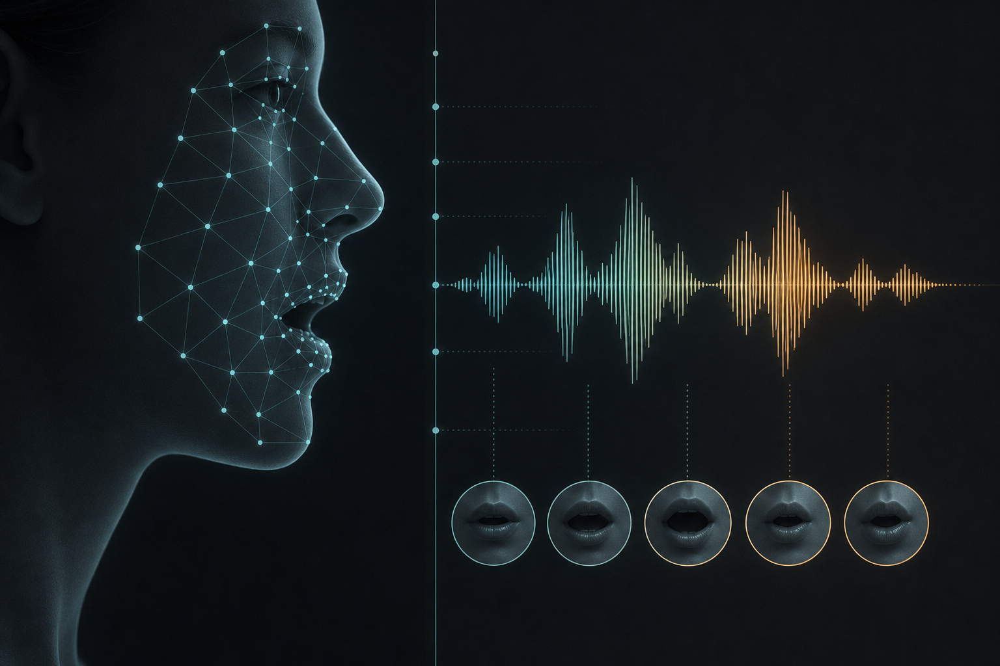

Multi-stage pipeline
Processing spans vocal separation, speech-centered segmentation, dual-ASR checks, DNSMOS filtering, face continuity screening, and SyncNet confidence scoring.
A bilingual corpus of high-fidelity, lip-synchronized speech–video pairs for automatic video dubbing.
About
Collected from in-the-wild videos, VoxDub is curated for clean speech, reliable transcripts, continuous face visibility, and tight lip–audio timing. It covers Chinese and English, and can also support TTS and related audiovisual learning tasks.

Highlights
Compared with audio-only TTS corpora or loosely matched talking-face sets, VoxDub prioritizes clip-level usability for video-conditioned speech generation.
Processing spans vocal separation, speech-centered segmentation, dual-ASR checks, DNSMOS filtering, face continuity screening, and SyncNet confidence scoring.
Kept samples favor intelligible audio, consistent annotations, a single visible speaker, and strong visual–acoustic correspondence for AVD training.
Access
Release files, setup notes, and usage guidance are published on GitHub.
Project page: https://github.com/voxdub-dataset/VoxDub
See the README there for the latest acquisition steps and license terms.
© VoxDub Dataset.
Released under CC BY-NC-SA 4.0.
VoxDub does not hold the audio or video copyrights; these remain with the original content creators. Users must decide whether and how to retrieve source media, and ensure that any use complies with applicable local laws and platform terms.
We aim to keep metadata accurate, but cannot guarantee that source videos will remain available.
Full licensing details and acquisition instructions: https://github.com/voxdub-dataset/VoxDub.